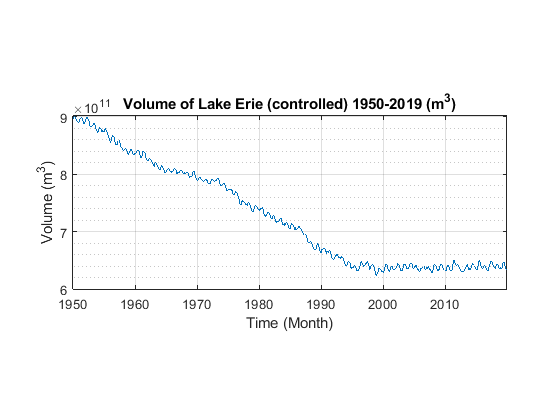
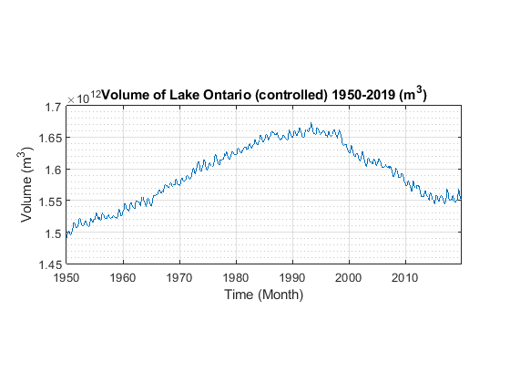
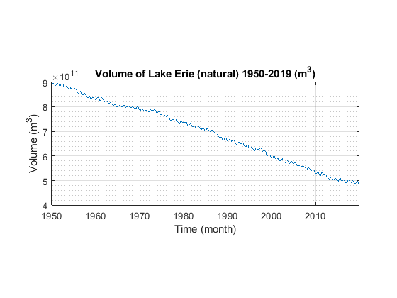
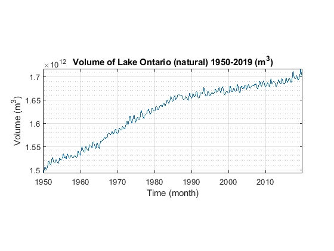

dates_table=readtable("Raw.xlsx","Sheet","Lake Erie","Range","A2:A841");
erie_vol_2019=480*1000^3;
ontar_vol_2019=1700*1000^3;
erie_area=25700*1000^2;
ontar_area=19000*1000^2;
dates=table2array(dates_table);
r3=(xlsread("Raw","Lake Erie", "B2:B841")*erie_area)/1000;
p3=(xlsread("Raw","Lake Erie", "C2:C841")*erie_area)/1000;
e3=(xlsread("Raw","Lake Erie", "D2:D841")*erie_area)/1000;
d3=xlsread("Raw","Lake Erie", "E2:E841")*60*60*24*30;
fo2=xlsread("Raw","Lake Erie", "F2:F841")*60*60*24*30;
fo3=xlsread("Raw","Lake Erie", "G2:G841")*60*60*24*30;
r4=(xlsread("Raw","Lake Ontario", "B2:B841")*ontar_area)/1000;
p4=(xlsread("Raw","Lake Ontario", "C2:C841")*ontar_area)/1000;
e4=(xlsread("Raw","Lake Ontario", "D2:D841")*ontar_area)/1000;
d3=xlsread("Raw","Lake Ontario", "E2:E841")*60*60*24*30;
fo4=xlsread("Raw","Lake Ontario", "G2:G841")*60*60*24*30;
erie_inflow=r3+p3+fo2;
erie_non_liquid_outflow=e3;
erie_to_ontar_flow=fo3+d3;
erie_total_outflow=erie_non_liquid_outflow+erie_to_ontar_flow;
erie_original_dvdt=erie_inflow-erie_total_outflow;
ontar_normal_inflow=p4+r4;
ontar_outflow=e4+fo4;
ontar_dvdt=ontar_normal_inflow+erie_to_ontar_flow-ontar_outflow;
backwards_erie_vol=[];
backwards_erie_vol(840)=erie_vol_2019-erie_original_dvdt(840);
for i = (length(erie_original_dvdt))-1:-1:1
backwards_erie_vol(i)=[backwards_erie_vol(i+1)-erie_original_dvdt(i+1)];
end
initial_erie_vol=backwards_erie_vol(1);
backwards_ontar_vol=[];
backwards_ontar_vol(840)=ontar_vol_2019-ontar_dvdt(840);
for i = (length(ontar_dvdt))-1:-1:1
backwards_ontar_vol(i)=[backwards_ontar_vol(i+1)-ontar_dvdt(i+1)];
end
initial_ontar_vol=backwards_ontar_vol(1);
erie_dvdt=[]';
ontar_vol=[];
erie_vol=[];
erie_dvdt(1)=erie_inflow(1)-erie_total_outflow(1);
ontar_vol(1)=initial_ontar_vol+erie_to_ontar_flow(1)-ontar_outflow(1);
erie_vol(1)=initial_erie_vol+erie_dvdt(1);
lowest_percentages=[];
lowest_heights=[];
lowest_means=[];
final_ontar_vol=[];
percentages=[0.90:0.01:1];
for x=percentages
ideal_erie_height=[floor(erie_vol_2019/erie_area):0.01:ceil(initial_erie_vol/erie_area)];
for n=ideal_erie_height
means_temp=[];
erie_height=[];
erie_height(1)=erie_vol(1)/erie_area;
for i = 2:840
if erie_height(i-1)<n;
erie_vol(i)=erie_vol(i-1)+erie_inflow(i)-erie_non_liquid_outflow(i)-(erie_to_ontar_flow(i)*x);
ontar_vol(i)=ontar_vol(i-1)+ontar_normal_inflow(i)+(erie_to_ontar_flow(i)*x)-ontar_outflow(i);
erie_dvdt(i)=erie_inflow(i)-erie_non_liquid_outflow(i)-(erie_to_ontar_flow(i)*x);
else
erie_vol(i)=erie_vol(i-1)+erie_inflow(i)-erie_non_liquid_outflow(i)-(erie_to_ontar_flow(i));
ontar_vol(i)=ontar_vol(i-1)+ontar_normal_inflow(i)+(erie_to_ontar_flow(i))-ontar_outflow(i);
erie_dvdt(i)=erie_inflow(i)-erie_non_liquid_outflow(i)-(erie_to_ontar_flow(i));
end
erie_height=[erie_height,(erie_vol(i)/erie_area)];
end
final_ontar_vol=[final_ontar_vol,ontar_vol(840)];
means_temp=[means_temp,mean(erie_dvdt(540:840))];
lowest_heights=[lowest_heights, n];
lowest_percentages=[lowest_percentages, x];
lowest_means=[lowest_means,min(abs(means_temp))];
end
end
accepted_ontar_final_vol=(initial_ontar_vol);
accepted_heights=[];
accepted_percentages=[];
accepted_lowest_dvdt=[];
accepted_volumes=[];
for i = 1:length(final_ontar_vol)
if final_ontar_vol(i)>(accepted_ontar_final_vol);
accepted_heights=[accepted_heights, lowest_heights(i)];
accepted_percentages=[accepted_percentages, lowest_percentages(i)];
accepted_lowest_dvdt=[accepted_lowest_dvdt, lowest_means(i)];
accepted_volumes=[accepted_volumes, final_ontar_vol(i)];
end
end
lowest_id=find(accepted_lowest_dvdt==min(accepted_lowest_dvdt));
if length(lowest_id)>1;
lowest_id=[lowest_id(end)];
end
erie_dvdt=[];
ontar_vol=[];
erie_vol=[];
ontar_vol(1)=initial_ontar_vol+erie_to_ontar_flow(1)-ontar_outflow(1);
erie_vol(1)=initial_erie_vol+erie_inflow(1)-erie_total_outflow(1);
erie_height=[];
erie_height(1)=erie_vol(1)/erie_area;
x=accepted_percentages(lowest_id);
for i = 2:840
ontar_height(i-1)=ontar_vol(i-1)/ontar_area;
if erie_height(i-1)<accepted_heights(lowest_id);
erie_vol(i)=erie_vol(i-1)+erie_inflow(i)-erie_non_liquid_outflow(i)-(erie_to_ontar_flow(i)*x);
ontar_vol(i)=ontar_vol(i-1)+ontar_normal_inflow(i)+(erie_to_ontar_flow(i)*x)-ontar_outflow(i);
erie_dvdt(i)=erie_inflow(i)-erie_non_liquid_outflow(i)-(erie_to_ontar_flow(i)*x);
else
erie_vol(i)=erie_vol(i-1)+erie_inflow(i)-erie_non_liquid_outflow(i)-(erie_to_ontar_flow(i));
ontar_vol(i)=ontar_vol(i-1)+ontar_normal_inflow(i)+(erie_to_ontar_flow(i))-ontar_outflow(i);
erie_dvdt(i)=erie_inflow(i)-erie_non_liquid_outflow(i)-(erie_to_ontar_flow(i));
end
erie_height=[erie_height,(erie_vol(i)/erie_area)];
end
disp("Below are the final optimum conditions and results of the simulation when they are used:")
disp("Lowest acceptable average surface height of Lake Erie: " + accepted_heights(lowest_id) + "m")
disp("Percentage of outflow that is allowed during restricted months: " + accepted_percentages(lowest_id)*100 + "%")
disp("Change in the volume of Lake Erie over past 25 years: "+ mean(erie_dvdt(540:840)) + "m3/month")
disp("Final volume of Lake Ontario under these conditions: " + accepted_volumes(lowest_id) + "m3")
figure()
plot(dates,erie_vol)
title("Volume of Lake Erie (controlled) 1950-2019 (m^3)")
xlabel("Time (Month)")
ylabel("Volume (m^3)")
grid on
grid minor
pbaspect([5 2 1])
figure()
plot(dates,ontar_vol)
title("Volume of Lake Ontario (controlled) 1950-2019 (m^3)")
xlabel("Time (Month)")
ylabel("Volume (m^3)")
grid on
grid minor
pbaspect([5 2 1])
erie_natural_inflow=r3+p3+fo2;
erie_natural_outflow=e3+fo3+d3;
erie_natural_dvdt=erie_natural_inflow-erie_natural_outflow;
erie_natural_vol=initial_erie_vol+datenum(cumtrapz(1,erie_natural_dvdt));
figure()
plot(dates,erie_natural_vol)
grid on
grid minor
title("Volume of Lake Erie (natural) 1950-2019 (m^3)")
xlabel("Time (month)")
ylabel("Volume (m^3)")
pbaspect([5 2 1])
ontar_natural_inflow=r4+p4+fo3+d3;
ontar_natural_outflow=e4+fo4;
ontar_natural_dvdt=ontar_natural_inflow-ontar_natural_outflow;
ontar_natural_vol=initial_ontar_vol+datenum(cumtrapz(1,ontar_natural_dvdt));
figure()
plot(dates,ontar_natural_vol)
grid on
grid minor
title("Volume of Lake Ontario (natural) 1950-2019 (m^3)")
xlabel("Time (month)")
ylabel("Volume (m^3)")
pbaspect([5 2 1])
Below are the final optimum conditions and results of the simulation when they are used:
Lowest acceptable average surface height of Lake Erie: 24.73m
Percentage of outflow that is allowed during restricted months: 90%
Change in the volume of Lake Erie over past 25 years: 40025.3023m3/month
Final volume of Lake Ontario under these conditions: 1551039898864m3
   